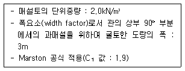
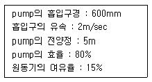
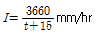
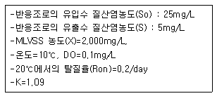
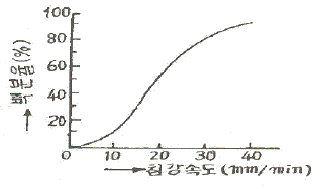
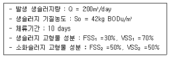
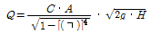
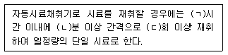
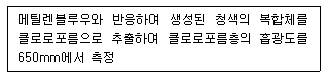

수질환경기사 (2006-08-16 기출문제)
1과목: 수질오염개론
1. 호소의 영양상태를 평가하기 위한 Carlson지수 산정시 적용되는 parameter와 가장 거리가 먼 것은?
- 클로로필-a
- T-P
- T-N
- 투명도
(정답률: 56%)

2. 수질오염물질의 침전과 용해현상을 설명하는 용해도곱(Ksp, AmBn ↔ [A]m+[B]n)에 대한 설명으로 틀린 것은?
- Ksp 값만 비교하더라도 화합물들의 상대적 용해도를 예측할 수 있다.
- [A]m[B]n>Ksp인 조건은 과포화 상태로 침전물이 생성된다.
- 용해되어 있는 오염물질을 불용성으로 형성침전시킬 때는 그 물질의 Ksp 값이 적을수록 해당오며물질의 침전에 유리하다.
- Ksp가 적다는 것은 대부분이 불용성고형물로 존재한다는 의미이다.
(정답률: 14%)
3. 프로피온산(C2H5COOH) 0.1M 용액이 10% 이온화 된다면 이온화 정수는?
- 1.11×10-3
- 1.61×10-3
- 2.37×10-4
- 2.74×10-4
(정답률: 34%)
4. 트리할로메탄(THM)에 관한 설명으로 틀린 것은?
- 전구물질의 농도가 높을수록 생성량은 증가한다.
- pH가 감소할수록 생성량은 증가한다.
- 온도가 증가할수록 생성량은 증가한다.
- 수돗물에 생성된 트리할로메탄류는 대부분 클로로포름으로 존재한다.
(정답률: 알수없음)
5. 하천모델의 종류중 ‘DO SAG - Ⅰ, Ⅱ, Ⅲ'에 관한 설명으로 틀린 것은?
- 1차원 정상상태 모델이다.
- 비점오염원이 하천의 용존산소에 미치는 영향은 고려하지 않는다.
- Streeter-Phelps식을 기본으로 한다.
- 저질의 영향이나 광합성 작용에 의한 용존산소반응을 무시한다.
(정답률: 알수없음)
6. 원생생물은 진핵생물과 원핵생물로 나우어 진다. 다음 중 원핵세포에 비하여 진핵세포만의 특성인 것은?
- 편모가 있음
- 골지체가 있음
- 염색체가 있음
- 세포벽이 있음
(정답률: 36%)
7. 해수에서 영양염류가 수온이 낮은 곳에 많고 수온이 높은 지역에서 적은 이유로 가장 거리가 먼 것은?
- 수온이 낮은 바다의 표층수는 원래 영양염류가 풍부한 극지방의 심층수로부터 기원하기 때문이다.
- 수온이 높은 바다의 표층수는 적도부근의 표층수로부터 기원하므로 영양염류가 결핍되어 있다.
- 수온이 낮은 바다는 겨울에 표층수가 냉각되어 밀도가 커지므로 침강작용이 일어나지 않기 때문이다.
- 수온이 높은 바다는 수계의 안정으로 수직혼합의 일어나지 않아 표층수의 영양염류가 플랑크톤에 의해 소비 되기 때문이다.
(정답률: 37%)
8. 최종 BOD가 15mg/L, DO가 5mg/L인 하천의 상류지점으로 부터 6일 유하거리의 하류지점에서의 DO농도는 몇 mg/L 인가? (단, DO 포화농도는 9mg/L, 탈산소 계수는 0.1/day, 재폭기 계수는 0.2/day이다. 상용대수 기준, 온도영향 고려치 않음)
- 약 5.2
- 약 5.9
- 약 6.2
- 약 6.8
(정답률: 알수없음)
9. 친수성 콜로이드에 관한 설명으로 틀린 것은?
- 유탁상태(에멀전)로 존재한다.
- 염에 민감하지 못하다.
- 표면장력에 용매보다 약하다.
- 틴달효과가 크다.
(정답률: 43%)
10. 수온 20℃, 유량 20m3/sec, BODu 5mg/L인 하천에 점오염원으로부터 유량 3m3/sec, 수온 20℃, 부하량 50gBODu/sec의 오염물질이 유입될 때 0.5일 유해 후의 잔류 BOD는? (단, 하천의 20℃의 탈산소 계수는 0.2/day(자연대수)이고, BOD분해에 필요한 만큼의 충분한 DO가 하천내에 존재함)
- 4.3mg/L
- 4.8mg/L
- 5.9mg/L
- 6.2mg/L
(정답률: 알수없음)
11. 물의 물리적 특성에 관한 설명으로 틀린 것은?
- 수소와 산소의 공유결합 및 수소결합으로 되어 있다.
- 수온이 감소하면 물의 점도는 증가한다.
- 물의 점도는 표준상태에서 대기의 대략 100배 정도 이다.
- 물분자 사이의 공유결합으로 큰 표면장력을 갖는다.
(정답률: 16%)
12. 어느 배양기의 제한기질농도(S)가 400mg/L, 세포비증식 계수 최대값(μamx)이 0.2/hr일 때 Monod 식에 의한 세포비증식계수(μ)는? (단, 제한기질 반포화농도(Ks)=20mg/L)
- 0.⑤/hr
- 0.12/hr
- 0.19/hr
- 0.23/hr
(정답률: 37%)
13. 반감기가 3일인 방사성 폐수의 농도가 10mg/L라면 감소속도정수(day-1)는? (단, 1차 반응속도 기준, 자연대수 기준)
- 0.231
- 0.264
- 0.312
- 0.347
(정답률: 77%)
14. 박테리아(C5H7O2N) 3g/L을 COD로 환산하면 몇 g/L 인가? (단, 질소는 암모니아로 전환됨)
- 1.81
- 2.12
- 3.42
- 4.25
(정답률: 27%)
15. 산화와 환원반응에 대한 설명으로 틀린 것은?
- 전자를 준 쪽은 산화된 것이고 전자를 얻는 쪽은 환원이 된 것이다.
- 산화수가 증가하면 산화, 감소하면 환원반응이라 한다.
- 산화제는 전자를 주는 물질이며 전자를 주는 힘이 클수록 더 강한 산화제이다.
- 상대방을 산화시키고 자신을 환원시키는 물질을 산화제라 한다.
(정답률: 67%)
16. 1차 반응식이 적용된다고 할 때 완전혼합반응기(CFSTR)의 체류시간은 PFR의 체류시간의 몇 배가 되는가? (단, 1차반응에 의해 초기농도의 70%가 감소되었고, 자연지수로 계산하며 속도상수는 같다고 가정함)
- 1.34
- 1.51
- 1.72
- 1.94
(정답률: 25%)
17. 다음의 유해물질과 그로 인하여 발생하는 대표적 만성질환을 알맞게 짝지은 것은?
- PCB : 파킨슨씨 증후군과 유사한 증상
- 수은 : 헌터-루셀 증후군
- 아연 : 월슨씨병
- 구리 : 카네미유증
(정답률: 알수없음)
18. 다음은 광합성에 대한 설명이다. 틀린 것은?
- 호기성광합성(녹색식물이 광합성)은 진조류와 청록조류를 위시하여 고등식물에서 발견된다.
- 녹색식물의 광합성은 탄산가스와 물로부터 산소와 포도당(또는 포도당 유도산물)을 생성하는 것이 특징이다.
- 세균활동에 의한 광합성은 탄산가스의 산화를 위하여 물 이외의 화합물질이 수소원자를 공여, 유리산소를 형성한다.
- 녹색식물의 광합성시 광은 에너지를 그리고 물은 환원반응에 수소를 공급해 준다.
(정답률: 알수없음)
19. 어떤 하천의 BOD5가 220mg/L이고, BODu가 470mg/L이다. 이 하천의 탈산소계수 (k1)값은? (단, 상용대수 기준)
- 0.0256/day
- 0.0392/day
- 0.0495/day
- 0.⑤48/day
(정답률: 40%)
20. 질산화박테리아의 환경조건에 관한 설명으로 틀린 것은?
- 절대 호기성이어서 높은 산소농도를 요구한다.
- Nitrobacter는 암모니움이온의 존재하에서 pH9.5이상 이면 생장이 억제된다.
- Nitrosomsnas는 약산성 상태에서 활성이 크지만 pH4.5 이하에서는 생장이 억제된다.
- 질산화반응의 최적온도는 30℃ 정도이다.
(정답률: 알수없음)
2과목: 상하수도계획
21. 차집관거에서 계획하수량으로 고려되는 것은?
- 계획우수량
- 우천시 계획오수량
- 계획시간최대오수량
- 계획일일최대오수량
(정답률: 19%)
22. 다음은 집수정에서 가정까지의 급수계통을 순서적으로 나열한 것으로 적절한 것은?
- 취수→도수→정수→송수→배수→급수
- 취수→도수→정수→배수→송수→급수
- 취수→송수→도수→정수→배수→급수
- 취수→송수→배수→정수→도수→급수
(정답률: 알수없음)
23. 소규모 하수도 계획시 고려하여야 하는 소규모 고유의 특성과 가장 거리가 먼 것은?
- 계획구역이 작고 처리구역내의 생활양식이 유사하며 유입하수의 수량 및 수질의 변동이 작다.
- 처리수의 방류지점이 유량이 작은 소하천, 소호수 및 농업용수로 등이므로 처리수의 영향을 받기가 쉽다.
- 일반적으로 건설비 및 유지관리비가 비싸게 되는 경향이 있다.
- 고장 및 유지보수시에 기술자의 확보가 곤란하고 제조업체의 의한 신속한 서비스를 받기 어렵다.
(정답률: 알수없음)
24. 수도관으로 사용되는 관종 중 경질염화비닐관의 장, 단점으로 틀린 것은?
- 특정 유기용제에 약하며 내면조도의 변화가 발생한다.
- 조인트의 종류에 따라 이형관 보호공을 필요로 한다.
- 저온시에 내충격성이 저하된다.
- 고무윤형은 조인트의 신축성이 있고, 관이 지반변동에 유연하게 대응할 수 있다.
(정답률: 30%)
25. 슬러지 농축방법중 중력식 농축에 관한 설명으로 틀린 것은?
- 저장과 농축이 동시에 가능하다.
- 잉여슬러지 농축에 적합하다.
- 악취문제가 발생한다.
- 약품을 사용하지 않는다.
(정답률: 0%)
26. 상수도 급수배관에 관한 설명으로 틀린 것은?
- 급수관을 공공도로에 부설할 경우에는 도로 관리지가 정한 점용위치와 깊이에 따라 배관해야 하며 다른 매설물과의 간격을 30cm 이상 확보한다.
- 급수관을 부설하고 되메우기를 할 때에는 양질토 또는 모래를 사용하여 적절하게 다짐하여 관을 보호한다.
- 급수관이 개거를 횡단하는 경우에는 가능한 한 개거의 위로 부설한다..
- 동결이나 결로의 우려가 있는 급수장치의 노출부분에 대해서는 적절한 방한조치나 결로방지조치를 강구한다.
(정답률: 70%)
27. 일반적으로 상수도용 펌프의 흡입구경은 토출량과 흡입구의 유속에 따라 결정된다. 펌프의 토출량이 20.0m3/min 이고 흡입구의 유속이 1.5m/sec 일 때 적합한 펌프의 구경은?
- 0.43m
- 0.53m
- 0.63m
- 0.73m
(정답률: 알수없음)
28. 다음과 조건하에서 매설된 하수도관이 받는 하중은?

- 약 34 kN/m
- 약 46 kN/m
- 약 59 kN/m
- 약 66 kN/m
(정답률: 19%)
29. 하수도 시설중 일차침전지에 관한 내용으로 틀린 것은?
- 표면 부하율은 계획1일최대오수량에 대하여 분류식의 경우 35 - 72m3/m2ㆍd로 한다.
- 표면 부하율은 계획1일최대오수량에 대하여 합류식의 경우 25 - 50m3/m2ㆍd로 한다.
- 침전시간은 계획1일최대오수량에 대하여 표면부하율과 유효수심을 고려하며 정하며 일반적으로 4-8시간으로 한다.
- 유효수심은 2.5-4m를 표준으로 한다.
(정답률: 알수없음)
30. 상수관의 부식은 자연부식과 전식으로 나누어 진다. 다음 중 전식에 해당되는 것은?
- 간섭
- 이종금속
- 산소농담(통기차)
- 특수토양부식
(정답률: 알수없음)
31. 계획오수량에 관한 설명으로 틀린 것은?
- 합ㄹ식에서 우천시 계획오수량은 원칙적으로 계획시간 최대오수량의 3배 이사으로 한다.
- 계획1일최대오수량은 1인1일최대오수량에 계획인구를 곱한 후, 여기에 공장 폐수량, 지하수량 및 기타 배수량을 더한 것으로 한다.
- 계획1일최대오수량은 1인1일최대오수량의 70-80%를 표준으로 한다.
- 계획시간최대오수량은 1인1일최대오수량의 1.2-1.5배를 표준으로 한다.
(정답률: 46%)
32. 정수시설인 급속여과지 시설기준에 관한 설명으로 틀린 것은?
- 여과면적은 계획정수량을 여과속도로 나누어 구한다.
- 1지의 여과면적은 200m2 이하로 한다.
- 모래층의 두께는 여과모래의 유효경이 0.45-0.7mm의 범위인 경우에는 60-70cm를 표준으로 한다.
- 여과속도는 120-150m/d를 표준으로 한다.
(정답률: 알수없음)
33. 아래와 같은 조건일 때 펌프를 운전하는 원동기의 출력은? (단, 하수 기준, 전달효율은 1.0 으로 한다.)

- 약 25kW
- 약 30kW
- 약 35kW
- 약 40kW
(정답률: 0%)
34. 하수도 관거 계획시 고려할 사항으로 틀린 것은?
- 오수관거는 계획시간최대오수량을 기준으로 계획한다.
- 오수관거와 우수관거가 교차하여 역사이폰을 피할 수 없는 경우, 우수관거를 역사이폰으로 하는 것이 좋다.
- 분류식과 합류식이 공존하는 경우에는 원칙적으로 양 지역의 관거는 분리하여 계획한다.
- 관거는 원칙적으로 암거로 하며 수밀한 구조로 하여야 한다.
(정답률: 47%)
35. 도수시설에서 도수되는 원수의 수위동요를 안정시키고 원수량을 조절하는 착수정에 관한 설명으로 틀린 것은?
- 착수정의 고수위와 주변벽체의 상단 간에는 60cm 이상의 여유를 두어야 한다.
- 형상은 일반적으로 직사각형 또는 원형으로 하고 유입구에는 제수밻 등을 설치한다.
- 착수정의 용량은 체류시간 30분 이상으로 한다.
- 착수정의 수심은 3 - 5 m 정도로 한다.
(정답률: 45%)
36. 하수도에 사용되는 펌퍼형식중 전양정이 5m 이하일 때 적용하고 펌프구경은 400mm 이상을 표준으로 하며 흡입성능이 낮고 효율폭이 좁은 것은?
- 원심펌프
- 스크류펌프
- 원심사류펌프
- 출류펌프
(정답률: 18%)
37. 단면형태가 말굽형인 하수관거의 장, 단점이 아닌 것은?
- 소구경 관거에 유리하며 경제적이다.
- 단면형상이 복잡하기 때문에 시공성이 열악하다.
- 상반부의 아치작용에 의해 역학적으로 유리하다.
- 현장타설의 경우는 공사기간이 길어진다.
(정답률: 29%)
38. 상수도 기본계획에 활용되는 ‘계획1일최대급수량’의 산정식으로 가장 알맞은 것은?
- 계획1일평균급수량/계획부하율
- 계획1일평균급수량/계획유효율
- 계획1일최대사용수량/계획부하율
- 계획1일최대사용수량/계획유효율
(정답률: 20%)
39. 하수도 시설기준에 의한 오수관거의 최고관경 표준은?
- 200mm
- 250mm
- 300mm
- 400mm
(정답률: 38%)
40. 강우강도

배수면적 3.0㎢, 유입시간 7분, 유출계수 C=0.5, 관내유속 1m/sec인 경우 관거길이 600m인 하수관거에서 흘러나오는 우수량은? (단, 합리식 적용)- 약 34m3/sec
- 약 48m3/sec
- 약 56m3/sec
- 약 67m3/sec
(정답률: 40%)
3과목: 수질오염방지기술
41. 포기조 유효용량이 500m3이고, 잉여슬러지 배출량이 m3/day로 운전되는 활성슬러지 공정이 있다. 반송슬러지의 SS 농도(Xr)에 대한 MLSS 농도(X)의 비 (X/Xr)가 0.25 일 때 평균 미생물 체류시간(MCRT)은?
- 3 day
- 4 day
- 5 day
- 6 day
(정답률: 24%)
42. CFSTR에서 물질을 분해하여 효율 95%로 처리하고자 한다. 이 물질은 0.5차 반응으로 분해되며, 속도상수는 0.⑤(mg/L)1/2/h이다. 유량은 600L/h이고 유입농도는 150mg/L로서 일정하다면 CFSTR의 필요 부피는? (단, 정상상태 가정)
- 425m3
- 537m3
- 624m3
- 763m3
(정답률: 16%)
43. 폐수 2000m3/day에서 생성되는 1차 슬러지(1차 침전지에서 발생되는 슬러지)부피(m3/day)는? (단, 1차 침전지 현탁 고형물 제거효율 60%, 폐수 중 현탁고형물 함유량 660mg/L, 비중 1.0기준, 슬러지함수율 94%, 제거된 현탁고형물은 전량이 슬러지화 된다고 가정)
- 8.4
- 9.8
- 13.2
- 15.4
(정답률: 37%)
44. 아래의 조건에서 탈질반응조 (anoxic basin)의 체류시간은?

- 3.2hr
- 5.7hr
- 8.3hr
- 9.6hr
(정답률: 25%)
45. 폐수유량이 5000m3/d, 부유 고형물의 농도가 150mg/L이다. 공기부상 시험에서 A/s비가 0.025 일 때 최적의 부상을 나타낸다. 설계온도 20℃, 이 때의 공기용해도는 18.7mL/L, 포화도 0.5, 표면부하율이 0.12m3/(m2ㆍmin)이라면 부상조의 필요한 압력과 표면적은? (단, 반송은 고려하지 않음)
- 2.31atm, 28.9m2
- 2.31atm, 37.6m2
- 2.62atm, 28.9m2
- 2.62atm, 37.6m2
(정답률: 16%)
46. 소독을 위한 ‘자외선방사’에 관한 설명으로 틀린 것은?
- 5-400nm 스펙트럼 범위의 단파장에서 발생하는 전자기 방사를 말한다.
- 미생물이 사멸되어 수중에 잔류방사량(잔류살균력이 있음)이 존재한다.
- 자외선소독은 화학물질 소비가 없고 해로운 부산물도 생성되지 않는다.
- 물과 수중의 성분은 자외선의 전달 및 흡수에 영향을 주며 Beer-lambert법칙이 적용된다.
(정답률: 19%)
47. 아래 막공법 중 물질 분리를 유발하는 추진력(driving force)에 대해 잘못 연결된 것은?
- 전기투석(Electrodialysis)-전위차
- 투석(Dialysis)-정압차
- 역삼투(Reverse Osmosis)-정압차
- 한외여과(Utrafiltration)-정압차
(정답률: 34%)
48. 폐수내 시안화합물 처리방법인 알칼리 염소법에 관한 설명과 가장 거리가 먼 것은?
- CN의 분해를 위해 유지되는 pH는 10 이상이다.
- 니켈과 철의 시안착염이 혼입된 경우 분해가 잘 되지 않는다.
- 산화제의 투입량이 과잉인 경우에는 염화시안이 발생되므로 산화제는 약간 부족하게 주입한다.
- 염소처리시 강알칼리성 상태에서 1단계로 염소를 주입하여 시안화합물을 시안산화물로 변환시킨 후 중화하고 2단계로 염소를 재주입하여 N2와 CO2로 분해시킨다.
(정답률: 알수없음)
49. 다음 중 연속회분식 활성슬러지법(SBR, Sequencing Batch Reactor)에 대한 설명으로 잘못된 것은?
- 단일 반응조에서 1주기(cycle) 중에 호기 - 무산소 등의 조건을 설정하여 질산화와 탈질화를 도모할 수 있다.
- 충격부하 또는 첨두유량에 대한 대응성이 약하다.
- 처리용량이 큰 처리장에는 적용하기 어렵다.
- 자동화를 실시하기가 용이하다.
(정답률: 27%)
50. 용수의 소족에 사용할 수 있는 소독제에 관한 설명으로 가장 거리가 먼 것은?
- 이산화염소는 맛과 냄새를 유발하는 페놀류화합물 제거에 주로 이용되었다.
- 이산화염소는 염소화 같이 THM을 생성하나 산화력은 염소보다 2.5배 강하다.
- 태양광중의 파장이 커질수록(길어질수록) 살균효과는 감소한다.
- 물을 멸균하기 위한 은의 투여량은 1μg - 0.5mg/L 정도로 알려져 있다.
(정답률: 10%)
51. SS 3,600mg/L를 함유하고 있는 폐수내 입자의 침강속도 분포가 다음 그림과 같을 때 폐수 28,800m3/day를 보통 침전처리 하여 SS 90%이상을 제거하고자 한다. 필요한 침전지의 최소 소요면적은?

- 약 100m2
- 약 200m2
- 약 1000m2
- 약 2000m2
(정답률: 알수없음)
52. 도시하수처리장의 농축조를 거친 혼합슬러지를 고속 혐기성 소화법에 의하여 처리하고자 한다. 다음의 조건을 이용한 소화조 소화율은?

- 74%
- 62%
- 57%
- 46%
(정답률: 알수없음)
53. 직겨이 다른 두개의원형입자를 동시에 20℃의 물에 떨어뜨려 침강실험을 했다. 입자 A의 직경은 2×10-2cm이며 입자 B의 직경은 3×10-2cm라면 입자 A와 B의 침강 속도의 비율(VA/VB)은? (단, 입자 A와 B의 비중은 같으며, stokes 공식을 적용)
- 0.67
- 0.44
- 0.23
- 0.18
(정답률: 30%)
54. 포기조내의 혼합액중 부유물농도(MLSS)가 2000g/m3, 반송슬러지의 부유물농도가 9000g/m3이라면 슬러지 반송률은? (단, 유입수내 SS 는 고려하지 않음)
- 23.2%
- 26.4%
- 28.6%
- 33.8%
(정답률: 41%)
55. 일일 슬러지 발생량이 3000kg/d인 소화조가 있다. 슬러지 70%인 휘발성물질을 포함하고 있으며 이중 60%가 분해된다. 슬러지 1kg이 분해될 때 50%의 메탄이 함유된 0.874m3/kg의 소화가스가 발생한다. 소화조 보온에 필요한 에너지는 530,000kJ/h이다. 발생된 에너지의 몇 % 가 실질적으로 소화조의 가온에 사용되었는가? (단, 메탄의 열량은 35,850kJ/m3이고, 가온장치의 열효율은 70%이다. 24시간 연속 가온 기준)
- 65%
- 74%
- 81%
- 92%
(정답률: 28%)
56. 유입하수 BOD가 200mg/L이고 포기조내 체류시간이 4시간이며 초기조의 F/M비를 0.3kgBOD/kgMLSS-day로 유지한다고 하면 초기조의 MLSS농도는?
- 2,000 mg/L
- 3,000 mg/L
- 4,000 mg/L
- 5,000 mg/L
(정답률: 알수없음)
57. 하수고도처리를 위한 A2/0 프로세스에서 최종적으로 인이 제거되는 과정을 가장 알맞게 설명한 것은?
- 무산소조에서 인이 미생물에 과잉섭취되어 제거된다.
- 혐기조에서 미생물의 인 방출후, 방류하여 제거한다.
- 인농도가 높은 침전지 상등수를 응집침전시켜 제거한다.
- 인농도가 높아진 잉여슬러지를 인발함으로써 제거한다.
(정답률: 알수없음)
58. 다음과 같은 조건하에서의 활성슬러지조에서 1일 발생하는 잉여슬러지량은? (단, 유입수량 10,500m3/d, 유입수 BOD 200mg/L, 유출수 BOD 20mg/L, Y=0.6, Kd=0.⑤/d, θc=10일)
- 624kg/d
- 756kg/d
- 847kg/d
- 966kg/d
(정답률: 25%)
59. 다음 각 수질인자가 금속하수도관의 부식에 미치는 영향을 잘못 기술한 것은?
- 고농도의 칼슘은 침전물이 쌓이는 곳에 부식을 가속화 한다.
- 마그네슘은 알칼리도와 pH 완충효과를 향상시킬 수 있다.
- 구리는 갈바닉 전지를 이룬 배관상에 구멍을 야기한다.
- 암모니아는 착화물의 형성을 통해 구리, 납 등의 금속용해도를 증가시킬 수 있다.
(정답률: 25%)
60. 함수율 90%인 슬러지 겉보기 비중이 1.02이었다. 이 슬러지를 탈수하여 함수율이 50%인 슬러지를 얻었다면 탈수된 슬러지가 갖는 비중은? (단, 물의 비중은 1.0으로 한다.)
- 약 1.24
- 약 1.18
- 약 1.11
- 약 1.08
(정답률: 16%)
4과목: 수질오염공정시험기준
61. 벤튜리미터(Venturi Meter)의 측정공식,

에서 (ㄱ)에 들어갈 것으로 알맞은 것은? (단, Q:유량(cm3/sec), C:유량계수, 단위는 적절함)- 유입부의 직경 / 목(throat)부 직경
- 목(throat)부 직경 / 유입부의 직경
- 유입부 관 중심부에서의 수두 / 목(throat)부의 수두
- 목(throat)부의 수두 / 유입부 관 중심부에서의 수두
(정답률: 39%)
62. 유리전극과 비교전극으로된 pH미터를 사용하여 pH를 측정할 때 pH표준약에 대한 pH값의 자현성 기준은? (단, 5회 측정시)
- ±0.01 이내의 것을 쓴다.
- ±0.03 이내의 것을 쓴다.
- ±0.⑤ 이내의 것을 쓴다.
- ±0.1 이내의 것을 쓴다.
(정답률: 31%)
63. 용존산소 측정시 시료가 현저히 착색되었거나 현택되어 있을 때 아래의 시료 전처리 방법중 옳은 것은?
- 암모니아수와 황산망간을 넣어 현탁물을 침강시킨 후 그 상등액을 사용한다.
- 암모니아수와 칼륨명반을 넣어 현탁물을 침강시킨 후 그 상등액을 사용한다.
- 여과지로 여과시켜 그 여액을 사용한다.
- 암모니아수와 황산구리를 넣어 현탁물을 침강시킨 후 그 상등액을 사용한다.
(정답률: 알수없음)
64. 가스크로마토그래피법에 의한 유기인 측정원리를 설명한 것 중 틀린 것은?
- 유기인 화합물중 이피엔, 파라티온, 메틸디메톤, 다이아지논 및 펜토에이트의 측정에 적용된다.
- 크로마토그램을 작성하여 나타난 봉우리의 유지시간에 따라 각 성분을 확인하고 봉우리의 높이 또는 면적을 측정하여 유기인을 정량한다.
- 정량범위는 사용하는 장치 및 측정조건에 따라 다르나 각 성분당 0.001-0.02μg이다.
- 유효측정 농도는 0.01mg/L 이상이다.
(정답률: 46%)
65. BOD 측정시 산성 또는 알칼리성 시료에 대하여 전처리를 할 때 중화를 위해 넣어주는 산 또는 알칼리의 양이 시료량의 몇 %가 넘지 않도록 하여야 하는가?
- 0.5
- 1.0
- 2.0
- 3.0
(정답률: 30%)
66. 괄호안의 숫자로 알맞게 짝지어진 것은? (단, 복수시료채취 방법)

- (ㄱ) 4, (ㄴ) 30, (ㄷ) 2
- (ㄱ) 6, (ㄴ) 30, (ㄷ) 2
- (ㄱ) 8, (ㄴ) 30, (ㄷ) 5
- (ㄱ) 12, (ㄴ) 30, (ㄷ) 5
(정답률: 알수없음)
67. 전기전도도의 측정에 관한 설명으로 잘못된 것은?
- 온도차에 의항 영향은 ±5%/℃정도이며 측정 결과값의 통일을 위하여 보정하여야 한다.
- 국제단위계인 mS/m(millisiemens/meter) 또한 μS/cm(microsiemens/centimeter) 단위로 측정결과를 표기하고 있다.
- 전기전도도는 용액이 전류를 운반할 수 있는 정도를 말한다.
- mSm=10μS/cm(또는 10μmhos/cm)이다.
(정답률: 30%)
68. 0.⑤mgN/㎖ 농도의 NH3-N 표준원액을 1L 조제하고자 할 때 요구되는 NH4Cl의 양은? (단, NH4Cl의 M.W=53.5)
- 127 mg/L
- 156 mg/L
- 176 mg/L
- 191 mg/L
(정답률: 알수없음)
69. 예상 BOD치에 대한 사전경험이 없을 대에는 희석하여 시료용액을 조제하는 기준으로 틀린 것은? (단, %는 시료함유 %)
- 강한 공장폐수는 0.1~1.0%
- 처리하지 않은 공장폐수와 침전된 하수는 1~5%
- 처리하여 방류된 공장폐수는 5~25%
- 오염된 하천수는 25~50%
(정답률: 34%)
70. 다음은 어떤 항목의 측정원리인가?

- 유기인
- 폴리클로리네이티드 비페닐
- 음이온 계면활성제
- 셀레늄
(정답률: 36%)
71. 용매추출-기체 크로마토그래피법을 이용한 휘발성 탄화수소 측정 정량에 관한 내용중 알맞지 않은 것은?
- 트리클로로에틸렌, 테트라클로로에틸렌을 헥세인으로 추출한다.
- 기체 크로마토그래프는 전자포획 검출기를 사용한다.
- 기체 크로마토그래프 운반기체인 질소 유량은 20-40mL/min이다.
- 기체 크로마토그래프 컬럼온도는 60-100℃ 이다.
(정답률: 알수없음)
72. 막여과 시험방법에 의한 총대장균군 계수법에서 시료를 10mL, 1mL 및 0.1mL 취해 시험한 결과 40, 9 및 <1? 이 계수되었을 경우 총대장균군수는?
- 390/100mL
- 400/100mL
- 410/100mL
- 440/100mL
(정답률: 34%)
73. 하수처리장에 유입되고 있는 하수의 부유물질량(SS)을 측정하였다. 시료 여과전 여지의 무게는 1.111g이었다. SS측정법에 따라 시료 300㎖를 여과한 후의 여지의 무게가 1.231g이었다면 유입수의 부유물질 농도는?
- 400mg/L
- 500mg/L
- 600mg/L
- 800mg/L
(정답률: 알수없음)
74. 시료의 전처리를 위해 회화로를 사용하여 시료중의 유기물을 분해시키고자 한다. 회화로의 온도로 가장 적정한 것은?
- 350℃
- 450℃
- 550℃
- 650℃
(정답률: 47%)
75. 유속-면적법에 의한 하천유량을 구하기 위한 소구간 단면에 있어서의 평균유속 Vm을 구하는 식으로 맞는 것은? (단, V0.2, V0.4, V0.5, V0.6, V0.8은 각각 수면으로부터 전수심의 20%, 40%, 50%, 60% 및 80%인 점의 유속이다.)
- 수심이 0.4m 미만일 때 Vm = V0.5
- 수심이 0.4m 미만일 때 Vm = V0.8
- 수심이 0.4m 미만일 때 Vm = (V0.2+V0.8)×1/2
- 수심이 0.4m 미만일 때 Vm = (V0.4+V0.6)×1/2
(정답률: 알수없음)
76. 다음은 실험의 일반적 내용을 설명한 것이다. 알맞지 않은 것은?
- 용액의 농도를 “%”로만 표시할 때는 W/V%를 말한다.
- 표준온도는 0℃, 상온은 15-25℃를 뜻한다.
- 시험에 사용하는 물은 따로 규정이 없는 한 정제수 또는 탈염수를 말한다.
- “정확히 취하여”라 함은 규정된 양의 시료를 메스실린더 눈금까지 취하는 것을 말한다.
(정답률: 43%)
77. 흡광광도 분석장치중 파장선택부에 거름종이를 사용한 것으로 단광속형이 많고 비교적 구조가 간단하여 작업분석용에 적당한 것은?
- 광전도셀
- 광전자증배관
- 광전광도계
- 광전분광광도계
(정답률: 20%)
78. 인 또는 황화합물을 선택적으로 검출할 수 있는 가스크로마토그래피법의 검출기는?
- ECD
- FPD
- TCD
- FTD
(정답률: 28%)
79. 원자흡광광도법에서 사용하고 있는 용어에 관한 설명으로 틀린 것은?
- 공명선은 원자가 외부로부터 빛을 흡수앴다가 다기 먼저 상태로 돌아갈 때 방사하는 스펙트럼선이다.
- 역화는 불꽃의 연소속도가 작고 혼합기체의 분출속도가 클 때 연소현상이 내부로 옮겨지는 것이다.
- 소연료불꽃은 가연성가스와 조연성 가스의 비를 적게한 불꽃. 즉 가연성가스/조연성가스의 값을 적게 한 불꽃이다.
- 멀티패스는 불꽃중에서 광로를 길게하고 흡수를 증대시키기 위하여 반사를 이용하여 불꽃중에 빛을 여러번 투과시키는 것이다.
(정답률: 34%)
80. 채취된 시료를 즉시 시험할 수 없을 때에는 알맞는 보존방법에 따라 보존하고 보존기간내에 실험을 하여야 한다. 다음 항목중 시료 최대보존기간이 가장 짧은 것은? (단, 알맞는 보존방법에 따라 처리한 경우)
- 6가 크롬
- 페놀류
- 수은
- 클로로필a
(정답률: 20%)
5과목: 수질환경관계법규
81. 낚시금지, 제한구역의 안내판 구격기준으로 적절한 것은?
- 바탕색: 녹색, 글씨: 흰색
- 바탕색: 흰색, 글씨: 녹색
- 바탕색: 흰색, 글씨: 청색
- 바탕색: 청색, 글씨: 흰색
(정답률: 40%)
82. 사람의 건강보호를 위한 전수역(호소)의 수질환경기준 중 잘못된 것은?
- 유기인 : 검출되어서는 안됨
- 6가크롬 : 0.⑤mg/L 이하
- 카드뮴(Cd) : 0.⑤mg/L 이하
- 음이온계면활성제(ABS) : 0.⑤mg/L 이하
(정답률: 24%)
83. 폐수처리업자의 준수사항으로 틀린 것은?
- 수탁한 폐수는 정당한 사유 없이 10일 이상 보관할 수 없다.
- 폐수는 성상별로 분리하여 수탁, 운반하여야 하고, 그 처리와 관련된 각종 기록은 1년간 보관하여야 한다.
- 폐수는 폐수처리능력과 처리가능 여부를 고려하여 수탁받아야 하며 [폐기물관리법]에 따른 지정폐기물을 수탁 받아서는 아니 된다.
- 등록을 한 운반시설로서 수탁폐수 이외의 다른 화물을 운반하는 영업행위를 하여서는 아니 된다.
(정답률: 알수없음)
84. 폐수처리방법이 화학적 처리방법인 경우에 시운전기간 기준은? (단, 가동개시일은 1월 1일임)
- 가동개시일부터 30일
- 가동개시일부터 40일
- 가동개시일부터 50일
- 가동개시일부터 60일
(정답률: 24%)
85. 폐수무방류배출시설에서 나오는 폐수를 사업장 밖으로 반출 또는 공공수역으로 배출하고나 배출할 수 있는 시설을 설치하는 행위를 한 자에 대한 벌칙 기준은?
- 7년 이하의 징역 또는 5천만원 이하의 벌금
- 5년 이하의 징역 또는 3천만원 이하의 벌금
- 3년 이하의 징역 또는 1천5백만원 이하의 벌금
- 1년 이하의 징역 또는 1천만원 이하의 벌금
(정답률: 17%)
86. 수질환경보전법상의 용어 정의가 틀린 것은?
- 폐수: 물에 액체성 또는 고체성의 수질오염물질이 혼입되어 그대로 사용 할 수 없는 물
- 수질오염물질: 사람의 건강, 재산이나 동, 식물 생육에 위해를 줄 수 있는 물질로 환경부령으로 정함
- 강우유출수: 비점오염원의 수질오염물질이 섞여 유출되는 빗물 도는 눈녹은 물 등
- 기타수질오염원: 점오염원 및 비점오염원으로 관리되지 아니하는 수질오염물질을 배출하는 시설 또는 장소로서 환경부령이 점함
(정답률: 알수없음)
87. 과징금부과기준 중 영업정지일수 1일당 부과금액기준은?
- 100만원
- 200만원
- 300만원
- 400만원
(정답률: 27%)
88. 수질오염경보인 조류예보(조류주의보 기준)발령시 관계 기관의 조치사항과 가장 거리가 먼 것은?
- 조류증식 수심 이하로 취수구 이동
- 주변 오염원에 대한 철저한 지도, 단속
- 정수처리강화(활성탄처리, 오존처리)
- 주 1회 이상 시료채취 및 분석
(정답률: 24%)
89. 측정망 설치계획 결정ㆍ고시시 허가를 받은 것으로 볼 수 있는 사항과 가장 거리가 먼 것은?
- 하천법 규정에 의한 하천공사의 허가
- 하천법 규정에 의한 하천점용의 허가
- 농지관리법 규정에 의한 농지점용의 허가
- 도로법 규정에 의한 도로점용의 허가
(정답률: 알수없음)
90. 환경기술인의 업무를 방해하거나 환경기술인의 요청을 정당한 사유 없이 거부한 자에 대한 벌칙 기준은?
- 5백만원 이하의 벌금
- 3백만원 이하의 벌금
- 2백만원 이하의 벌금
- 1백만원 이하의 벌금
(정답률: 알수없음)
91. 대권역 수질보전계획 수립시 포함되어야 하는 사항과 가장 거리가 먼 것은?
- 수질오염도 추이 및 목표수질
- 수질오염원 발생원 대책
- 수질오염 예방 및 저감대책
- 상수원 및 물 이용현황
(정답률: 알수없음)
92. 환경기술인을 두어야 하는 사업장의 범위 및 환경기술인의 자격기준을 정하는 령은?
- 대통령령
- 국무총리령
- 환경부장관령
- 시ㆍ도지사령
(정답률: 28%)
93. 사업장별 환경기술인의 자격기준에 관한 설명으로 틀린 것은?
- 연간 90일 미만 조업하는 1,2 또는 3종 사업장은 제4종, 제5종사업장에 해당하는 환경기술인을 둘 수 있다.
- 환경기능사는 제3종 사업장의 환경기술인으로 종사할 수 있다.
- 공동방지시설에 있어서 폐수배출량이 1, 2, 3종 사업장의 규모에 해당되는 경우에는 4, 5종 사업장에 해당하는 환경기술인을 둘 수 있다.
- 3년이상 수질분야 환경관련업무에 직접 종사한 자는 제3종 사업장의 환경기술인으로 종사할 수 있다.
(정답률: 25%)
94. 다음 수질오염방지시설중 화학적 처리시설이 아닌 것은?
- 살균시설
- 응집시설
- 소각시설
- 이온교환시설
(정답률: 13%)
95. 비점오염원 관리대책 수립에 포함되어야 하는 사항과 가장 거리가 먼 것은?
- 관리 목표
- 관리대상 수질오염물질 발생원 현황
- 관리대상 수질오염물질의 발생 예방 및 저감 방안
- 관리대상 수질오염물질의 종류 및 발생량
(정답률: 20%)
96. 수질오염경보인 조류예보경보단계 중 조류주의보 발령 기준으로 적절한 것은?
- 2회 연속채취시 클로로필-a 농도 15mg/m3 이상이고 남조류 세포수 500 세포/mL 이상인 경우
- 2회 연속채취시 클로로필-a 농도 25mg/m3 이상이고 남조류 세포수 500 세포/mL 이상인 경우
- 2회 연속채취시 클로로필-a 농도 15mg/m3 이상이고 남조류 세포수 1,000 세포/mL 이상인 경우
- 2회 연속채취시 클로로필-a 농도 25mg/m3 이상이고 남조류 세포수 1,000 세포/mL 이상인 경우
(정답률: 19%)
97. 기타 수질오염원 시설인 폐차장 시설(자동차 폐차장 시설)의 규모 기준으로 적절한 것은?
- 면적 1000m2 이상
- 면적 1500m2 이상
- 면적 2000m2 이상
- 면적 2500m2 이상
(정답률: 50%)
98. 시도지사가 공공수역의 수질보전을 위해 고랭지 경작지에 대하여 경작방법을 권고할 때 기준이 되는 환경부령이 정하는 해발고도, 경사도 기준으로 적절한 것은?
- 해발 300 m, 경사도 15 퍼센트
- 해발 400 m, 경사도 15 퍼센트
- 해발 500 m, 경사도 25 퍼센트
- 해발 600 m, 경사도 25 퍼센트
(정답률: 64%)
99. 비점오염방지시설의 시설유형인 자연형 시설에 해당되지 않는 것은?
- 저류 시설
- 식생형 시설
- 여과형 시설
- 침투 시설
(정답률: 알수없음)
100. 위임업무 보고사항의 업무내용 중 보고횟수가 ‘수시’에 해당되는 것은?
- 폐수무방류배출시설의 설치허가(변경허가) 현황
- 기타 수질오염원 현황
- 환경기술인의 자격별, 업종별 신고상황
- 배출업소의 지도, 점검 및 행정처분 실적
(정답률: 32%)